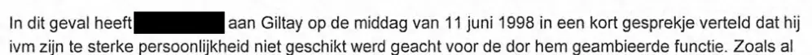

Preuve · Note
La Défense au Médiateur national au sujet de Giltay, 7 octobre 1999
Le passage
« En l’occurrence, […] a dit à Giltay, l’après-midi du 11 juin 1998, au cours d’un bref entretien, qu’en raison de sa personnalité trop forte, il n’était pas jugé apte à la fonction qu’il briguait. » Page 1, dernier paragraphe, où le chef de la section des examens psychologiques du service de recrutement et de sélection de la Défense décrit l’entretien du 11 juin 1998 au cours duquel le refus a été annoncé. Traduit du néerlandais ; le texte original figure ci-dessous.
Texte original
“In dit geval heeft […] aan Giltay op de middag van 11 juni 1998 in een kort gesprekje verteld dat hij ivm zijn te sterke persoonlijkheid niet geschikt werd geacht voor de dor hem geambieerde functie.” Les crochets signalent un nom caviardé dans le document. « ivm » est l’abréviation néerlandaise d’« in verband met » (en raison de), et « dor hem » est une faute de frappe pour « door hem » (par lui) ; les deux sont laissés tels quels.

Pourquoi ce document compte
Cette note téléphonique du 7 octobre 1999 rapporte ce que le service de recrutement et de sélection de la Défense a dit au Médiateur national au sujet de l’examen de sélection de Giltay du 11 juin 1998 : l’après-midi de ce jour-là, il s’est entendu dire qu’il n’était pas jugé apte parce que sa personnalité était trop forte. En deuxième page, le chef de la section des examens psychologiques explique ce motif de refus en faisant observer que, pour de telles fonctions, la Marine royale a besoin de personnes encore bien « malléables et modelables ». L’essai range ce document parmi les preuves qui contredisent la qualification attribuée à Giltay par le ministre de la Défense, qualification qui figure toujours dans le rapport public du Médiateur national de 1999. L’évaluation est celle de la Défense elle-même : le Médiateur l’a reçue du ministère dans le dossier de plainte même sur lequel repose son rapport.
Provenance
- Document
- Note téléphonique (« Telefoonnotitie »), appel entrant, deux pages
- Expéditeur
- Service de recrutement et de sélection de la Défense (Defensie Werving en Selectie), Amsterdam ; les noms des fonctionnaires sont caviardés
- Destinataire
- Les services du Médiateur national, le collaborateur chargé de la plainte
- Dossier
- 98.07789, au nom de Giltay
- Date
- 7 octobre 1999, enregistrement à 12:29:37
- Objet
- « info mbt klacht (betr. ambtenaar) » (informations concernant la plainte, fonctionnaire concerné)
- Concerne
- L’examen de sélection de Giltay au service de recrutement et de sélection de la Défense le 11 juin 1998, l’entretien et les tests du matin, l’évaluation par un second psychologue et l’entretien de l’après-midi au cours duquel le refus lui a été annoncé
- Marquage
- DOC 11, en lettres rouges en haut à droite de la page 1
- Langue
- Néerlandais
- Conservé par
- Médiateur national
- Voir aussi
- Rapport 1999/507 du Médiateur national, 17 décembre 1999
Cité dans :
- l’essai « L’interdiction tombée, le livre debout » dans les chapitres (3) « Ce que révèle le livre : la dissimulation autour de Srebrenica », (9) « Consigné pour toujours » et (10) « Des fissures dans le mur »
- la section des voix.
Document : https://
Dernière modification le 13 septembre 2026, consulté le 9 octobre 2026.

Cette page est une fiche de preuve du livre Le Général de dissimulation d’Edwin Giltay et du site web qui l’accompagne.